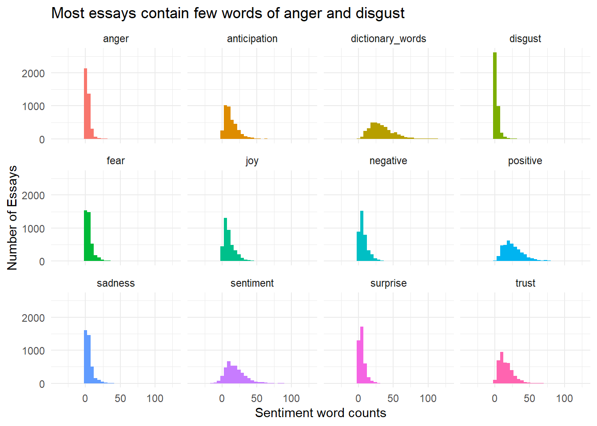
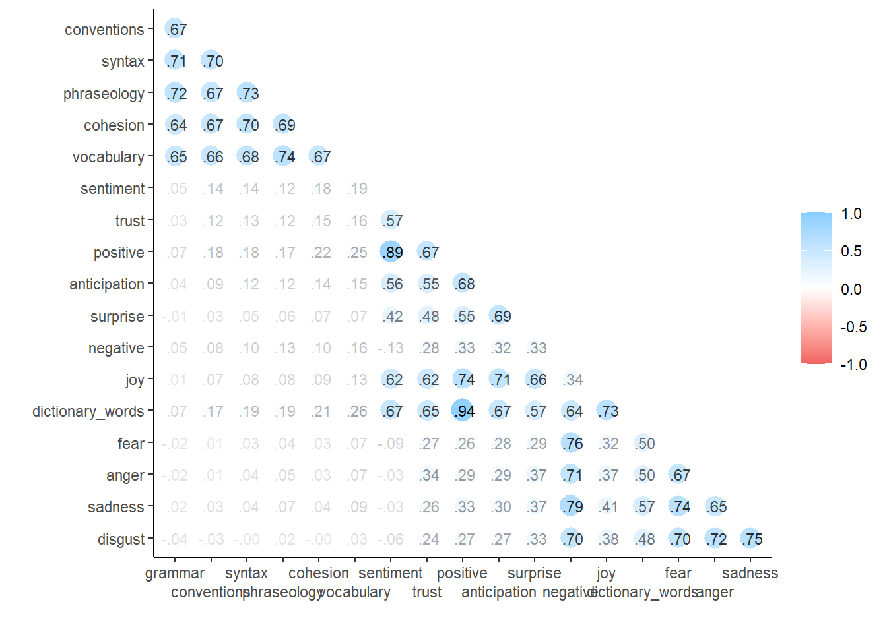
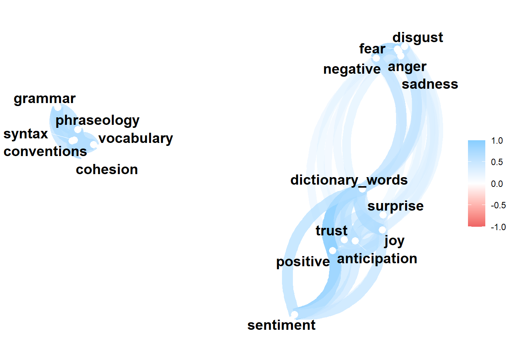

Kaggle Feedback Prize - English Language Learning
Jim Gruman
October 15, 2022
Last updated: 2022-10-15
Checks: 7 0
Knit directory: myTidyTuesday/
This reproducible R Markdown analysis was created with workflowr (version 1.7.0). The Checks tab describes the reproducibility checks that were applied when the results were created. The Past versions tab lists the development history.
Great! Since the R Markdown file has been committed to the Git repository, you know the exact version of the code that produced these results.
Great job! The global environment was empty. Objects defined in the global environment can affect the analysis in your R Markdown file in unknown ways. For reproduciblity it’s best to always run the code in an empty environment.
The command set.seed(20210907) was run prior to running
the code in the R Markdown file. Setting a seed ensures that any results
that rely on randomness, e.g. subsampling or permutations, are
reproducible.
Great job! Recording the operating system, R version, and package versions is critical for reproducibility.
Nice! There were no cached chunks for this analysis, so you can be confident that you successfully produced the results during this run.
Great job! Using relative paths to the files within your workflowr project makes it easier to run your code on other machines.
Great! You are using Git for version control. Tracking code development and connecting the code version to the results is critical for reproducibility.
The results in this page were generated with repository version bb8b757. See the Past versions tab to see a history of the changes made to the R Markdown and HTML files.
Note that you need to be careful to ensure that all relevant files for
the analysis have been committed to Git prior to generating the results
(you can use wflow_publish or
wflow_git_commit). workflowr only checks the R Markdown
file, but you know if there are other scripts or data files that it
depends on. Below is the status of the Git repository when the results
were generated:
Ignored files:
Ignored: .Rhistory
Ignored: .Rproj.user/
Ignored: data/.Rhistory
Ignored: data/CNHI_Excel_Chart.xlsx
Ignored: data/Chicago.rds
Ignored: data/CommunityTreemap.jpeg
Ignored: data/Community_Roles.jpeg
Ignored: data/SeriesReport-20220414171148_6c3b18.xlsx
Ignored: data/Weekly_Chicago_IL_Regular_Reformulated_Retail_Gasoline_Prices.csv
Ignored: data/YammerDigitalDataScienceMembership.xlsx
Ignored: data/YammerMemberPage.rds
Ignored: data/YammerMembers.rds
Ignored: data/df.rds
Ignored: data/grainstocks.rds
Ignored: data/hike_data.rds
Ignored: data/lm_res.rds
Ignored: data/netflixTitles.rds
Ignored: data/netflixTitles2.rds
Ignored: data/raw_weather.RData
Ignored: data/sample_submission.csv
Ignored: data/submission.csv
Ignored: data/test.csv
Ignored: data/train.csv
Ignored: data/us_states.rds
Ignored: data/us_states_hexgrid.geojson
Ignored: data/weatherstats_toronto_daily.csv
Ignored: data/xgb_res.rds
Untracked files:
Untracked: analysis/2022_09_01_kaggle_tabular_playground.qmd
Untracked: code/YammerReach.R
Untracked: code/autokeras.R
Untracked: code/chicago.R
Untracked: code/glmnet_test.R
Untracked: code/googleCompute.R
Untracked: code/work list batch targets.R
Untracked: environment.yml
Untracked: figure/
Untracked: report.html
Unstaged changes:
Modified: analysis/2021_01_19_tidy_tuesday.Rmd
Modified: analysis/2021_03_24_tidy_tuesday.Rmd
Deleted: analysis/2021_04_20.Rmd
Deleted: analysis/2022_02_11_tabular_playground.Rmd
Deleted: analysis/2022_04_18.qmd
Modified: analysis/Survival.Rmd
Modified: analysis/_site.yml
Modified: code/_common.R
Note that any generated files, e.g. HTML, png, CSS, etc., are not included in this status report because it is ok for generated content to have uncommitted changes.
These are the previous versions of the repository in which changes were
made to the R Markdown
(analysis/EnglishLanguageLearning.Rmd) and HTML
(docs/EnglishLanguageLearning.html) files. If you’ve
configured a remote Git repository (see ?wflow_git_remote),
click on the hyperlinks in the table below to view the files as they
were in that past version.
| File | Version | Author | Date | Message |
|---|---|---|---|---|
| Rmd | bb8b757 | opus1993 | 2022-10-15 | initial commit of Kaggle English Language Learning |
The Kaggle Challenge presented here works with a dataset that comprises argumentative essays (the ELLIPSE corpus) written by 8th-12th grade English Language Learners (ELLs). The essays have been scored according to six measures: cohesion, syntax, vocabulary, phraseology, grammar, and conventions.
Each measure represents a component of writing proficiency, ranging from 1.0 to 5.0 in increments of 0.5. Our task is to predict the score of each measure by essay.

Preprocessing
Natural Language Processing techniques offer a wide variety of tools to approach this problem. The Kaggle host is requiring that the model run as a standalone, without internet assistance. They also ask for a parsimonous, explainable model.
We will start with exploring the predictive potential of the text count features, like numbers of words, distinct words, and spaces.
Unsupervised topic grouping categories may be useful for measures like conventions or grammar. We will start with LDA.
Individual words may have some predictive power, but they could be so sparse as to be difficult to separate from the background noise.
A sentiment dictionary may add predictive power to some measures, along with helping to count miss-spellings.
Word embeddings like Glove or Huggingface could also better characterize meaning.
Modeling
Most are tempted to jump into (CNN / LSTM) deep learning predictive models, but the number of essays is really pretty small for a deep learning run.
I spent a few evenings with the torch/brulee approach on
tidymodels, but discovered that modeling time consumed
would be signifiant and the results were not better than random forests
on strong engineered features with case weights based on inverse
proportions of the metric values.
I ultimately settled on the xgboost approach here. No
doubt it massively overfits on specific words and text counts, like the
number of unique words.
One last point. I believe that the Essay Scoring is done by humans in
a way where the metrics are judged together, and not entirely
independently. In other words, low grammar and low
cohesion are likely related. I will go as far as I can
assuming independence, but at some point a chaining or calibration run
to pull all metrics together may be appropriate.
suppressPackageStartupMessages({
library(tidyverse)
library(tidymodels)
library(stm)
library(text2vec)
library(tidytext)
library(textrecipes)
})
tidymodels::tidymodels_prefer()
theme_set(theme_minimal())train_essays_raw <- read_csv(here::here("data","train.csv"),
show_col_types = FALSE)
submit_essays_raw <- read_csv(here::here("data","test.csv"),
show_col_types = FALSE)
outcomes = names(train_essays_raw)[3:8]This is a function to look at nrc sentiments and a way
to break out mis-spelled words by subtracting dictionary words from
total unique tokens.
sentiment_preprocessor <- function(data = submit_essays_raw){
data %>%
tidytext::unnest_tokens(word, full_text) |>
inner_join(get_sentiments("nrc"), by = "word") %>% # pull out only sentiment words
count(sentiment, text_id) %>% # count the # of positive & negative words
spread(sentiment, n, fill = 0) %>% # made data wide rather than narrow
mutate(sentiment = positive - negative,
dictionary_words = positive + negative) %>% # # of positive words - # of negative words
select(anger:dictionary_words)
}
sentiments <- paste(names(sentiment_preprocessor()),
collapse = " + ")
sentiment_preprocessor(data = train_essays_raw) |>
pivot_longer(cols = everything(),
names_to = "metric",
values_to = "Sentiment word counts") |>
ggplot(aes(`Sentiment word counts`, fill = metric)) +
geom_histogram(bins = 35, show.legend = FALSE) +
facet_wrap(vars(metric)) +
labs(y = "Number of Essays",
title = "Most essays contain few words of anger and disgust")
train_essays_sentiment <- train_essays_raw |>
bind_cols(sentiment_preprocessor(train_essays_raw))
submit_essays_sentiment <- submit_essays_raw |>
bind_cols(sentiment_preprocessor(submit_essays_raw))Essays with more words, or more sentences, do not necessarily score better.
te_long <- train_essays_raw |>
pivot_longer(cols = cohesion:conventions,
names_to = "metric",
values_to = "value") |>
mutate(metric = as.factor(metric),
value = as.factor(value))
te_long |>
group_by(n_words = ggplot2::cut_interval(
tokenizers::count_words(full_text),
length = 200),
metric, value) |>
summarise(`Number of essays` = n(),
.groups = "drop") |>
ggplot(aes(n_words, `Number of essays`, fill = as.factor(value))) +
geom_col() +
scale_x_discrete(guide = guide_axis(n.dodge = 2)) +
facet_wrap(vars(metric)) +
labs(x = "Number of words per essay",
y = "Number of essays",
fill = "Score")
te_long |>
group_by(n_words = ggplot2::cut_interval(
tokenizers::count_sentences(full_text), length = 20),
metric, value) |>
summarise(`Number of essays` = n(),
.groups = "drop") |>
ggplot(aes(n_words, `Number of essays`, fill = as.factor(value))) +
geom_col() +
scale_x_discrete(guide = guide_axis(n.dodge = 2)) +
facet_wrap(vars(metric)) +
labs(x = "Number of sentences per essay",
y = "Number of essays",
fill = "Score")
A look at predictor and outcome pairwise correlations.
train_essays_sentiment |>
# select(!!outcomes) %>%
corrr::correlate(
quiet = TRUE
) %>%
corrr::rearrange() %>%
corrr::shave() %>%
corrr::rplot(print_cor = TRUE) +
scale_x_discrete(guide = guide_axis(n.dodge = 2))
train_essays_sentiment |>
# select(!!outcomes) %>%
corrr::correlate(
quiet = TRUE
) %>%
corrr::network_plot()
- Vocabulary and Phraseology (0.74) track together.
- Phraseology and Syntax (0.73) track together.
- Praseology and Grammar (0.72) track together.
Let’s set some initial hyperparameters.
# train dataset has 21953 unique one n_gram tokens.
topics <- 90L # LDA topic modelsLatent Dirichlet allocation (LDA) is an unsupervised generative statistical model that explains a set of observations through unobserved groups, and the content of each group may explain why some parts of the data are similar.
I’d like to explore the use of
inverse probability weights because there are so few essays
with scores at the highest and lowest levels. When survey respondents
have different probabilities of selection, (inverse) probability weights
help reduce bias in the results.
I am making us of metaprogramming techniques to pass text vector column names into the formula and case weights functions to re-use them for each metric.
case_weight_builder <- function(data, outcome) {
data %>%
inner_join(
train_essays_sentiment %>%
count(.data[[outcome]],
name = "case_wts"),
by = glue::glue("{ outcome }")
) %>%
mutate(case_wts = importance_weights(max(case_wts) / case_wts))
}
recipe_builder <- function(outcome = "cohesion",
predictor = "full_text",
sentiments = "dictionary_words"){
rec <- recipe(formula(glue::glue("{ outcome } ~ { predictor } + { sentiments } + case_wts")),
data = train_essays_sentiment %>%
case_weight_builder(outcome)
) %>%
step_textfeature(full_text,
keep_original_cols = TRUE) %>%
step_rename_at(
starts_with("textfeature_"),
fn = ~ gsub("textfeature_full_text_", "", .)
) %>%
step_mutate(nonwords = n_uq_words - dictionary_words ) %>%
#### cluster the essays by topic, generally
step_tokenize(full_text) %>%
step_lda(full_text,
num_topics = topics,
keep_original_cols = TRUE) %>%
step_tfidf(full_text) %>%
step_clean_names(all_predictors()) %>%
#### remove columns that are super-sparse and unbalanced
step_nzv(all_predictors(), unique_cut = 9) %>%
step_normalize(all_numeric_predictors())
return(rec)
}As mentioned above, the model specification is xgboost
for regression to predict a continuous outcome.
# finalize(mtry(),
# recipe_builder() |>
# prep() |>
# bake(new_data = NULL))
spec <-
boost_tree(
mtry = 70, # 75L
trees = 500L,
tree_depth = 9, # 6L
learn_rate = 0.01, # originally 0.1
min_n = 20, # 20L
loss_reduction = 0
) %>%
set_engine('xgboost') %>%
set_mode('regression')
# all_cores <- parallelly::availableCores(omit = 1)
# all_cores
#
# future::plan("multisession", workers = all_cores) # on WindowsWe fit for cohesion first and use case weights to adjust
for the frequency of occurrence of cohesion. After looking
at variable importance (roughly the number of times a variable appears
in the trees) and residuals, we make our prediction on the submission
set essays and adding that column to the dataframe.
outcome <- outcomes[1]
train_df <- train_essays_sentiment %>%
case_weight_builder(outcome)
wf <- workflow(recipe_builder(outcome = outcome, sentiments = sentiments), spec) |>
add_case_weights(case_wts)
#
#folds <- vfold_cv(train_df, strata = !!outcome)
#grid <- expand.grid(learn_rate = c(0.006, 0.01, 0.03))
# rs <- tune_grid(
# wf,
# folds,
# grid = grid,
# metrics = metric_set(rmse),
# control = control_grid()
# )
#
# autoplot(rs)
# collect_metrics(rs)
fit <- parsnip::fit(wf, train_df)as(<dgTMatrix>, "dgCMatrix") is deprecated since Matrix 1.5-0; do as(., "CsparseMatrix") insteadextract_fit_engine(fit) |>
vip::vip(num_features = 20)
train_preds <- predict(fit, new_data = train_essays_sentiment) |>
bind_cols(train_essays_raw |> select(!!outcome)) |>
rename(truth = !!outcome)
train_preds |>
ggplot(aes(x = factor(truth), y = .pred - truth)) +
geom_boxplot() +
labs(title = glue::glue("{ outcome } residuals")) 
train_preds %>%
yardstick::rmse(truth, .pred)submit_essays_sentiment <- predict(fit, submit_essays_sentiment) |>
rename({{outcome}} := .pred) |>
bind_cols(submit_essays_sentiment)Warning in get_dtm(corp): dtm has 0 rows. Empty iterator?We fit for syntax second and use case weights to adjust
for the frequency of occurrence of syntax. I am choosing to
use the predicted values of cohesion above as an additional
predictor.
outcome <- outcomes[2]
predictor <- glue::glue("full_text + { outcomes[1] }")
train_df <- train_essays_sentiment %>%
case_weight_builder(outcome)
wf <- workflow(recipe_builder(outcome, predictor, sentiments), spec) %>%
add_case_weights(case_wts)
fit <- parsnip::fit(wf, train_df)
extract_fit_engine(fit) |>
vip::vip(num_features = 20)
train_preds <- predict(fit, new_data = train_essays_sentiment) |>
bind_cols(train_essays_raw |> select(!!outcome)) |>
rename(truth = !!outcome)
train_preds |>
ggplot(aes(x = factor(truth), y = .pred - truth)) +
geom_boxplot() +
labs(title = glue::glue("{ outcome } residuals")) 
train_preds %>%
yardstick::rmse(truth, .pred)submit_essays_sentiment <- predict(fit, submit_essays_sentiment) |>
rename({{outcome}} := .pred) |>
bind_cols(submit_essays_sentiment)Warning in get_dtm(corp): dtm has 0 rows. Empty iterator?We fit for vocabulary next and use case weights to
adjust for the frequency of occurrence of vocabulary. I am
choosing to use the predicted values of cohesion and
syntax above as additional predictors.
outcome <- outcomes[3]
predictor <- glue::glue("full_text + { outcomes[1] } + { outcomes[2] }")
train_df <- train_essays_sentiment %>%
case_weight_builder(outcome)
wf <- workflow(recipe_builder(outcome, predictor, sentiments), spec) %>%
add_case_weights(case_wts)
fit <- parsnip::fit(wf, train_df)
extract_fit_engine(fit) |>
vip::vip(num_features = 20)
train_preds <- predict(fit, new_data = train_essays_sentiment) |>
bind_cols(train_essays_raw |> select(!!outcome)) |>
rename(truth = !!outcome)
train_preds |>
ggplot(aes(x = factor(truth), y = .pred - truth)) +
geom_boxplot() +
labs(title = glue::glue("{ outcome } residuals")) 
train_preds %>%
yardstick::rmse(truth, .pred)submit_essays_sentiment <- predict(fit, submit_essays_sentiment) |>
rename({{outcome}} := .pred) |>
bind_cols(submit_essays_sentiment)Warning in get_dtm(corp): dtm has 0 rows. Empty iterator?We fit for phraseology next and use case weights to
adjust for the frequency of occurrence of phraseology. I am
choosing to use the predicted values of cohesion,
syntax, and vocabulary above as additional
predictors.
outcome <- outcomes[4]
predictor <- glue::glue("full_text + { outcomes[1] } + { outcomes[2] } + { outcomes[3] }")
train_df <- train_essays_sentiment %>%
case_weight_builder(outcome)
wf <- workflow(recipe_builder(outcome, predictor, sentiments), spec) %>%
add_case_weights(case_wts)
fit <- parsnip::fit(wf, train_df)
extract_fit_engine(fit) |>
vip::vip(num_features = 20)
train_preds <- predict(fit, new_data = train_essays_sentiment) |>
bind_cols(train_essays_raw |> select(!!outcome)) |>
rename(truth = !!outcome)
train_preds |>
ggplot(aes(x = factor(truth), y = .pred - truth)) +
geom_boxplot() +
labs(title = glue::glue("{ outcome } residuals")) 
train_preds %>%
yardstick::rmse(truth, .pred)submit_essays_sentiment <- predict(fit, submit_essays_sentiment) |>
rename({{outcome}} := .pred) |>
bind_cols(submit_essays_sentiment)Warning in get_dtm(corp): dtm has 0 rows. Empty iterator?We fit for grammar next and use case weights to adjust
for the frequency of occurrence of grammar. I am choosing
to use the predicted values of cohesion,
syntax, vocabulary, and
phraseology above as additional predictors.
outcome <- outcomes[5]
predictor <- glue::glue("full_text + { outcomes[1] } + { outcomes[2]} + {outcomes[3]} + {outcomes[4]}")
train_df <- train_essays_sentiment %>%
case_weight_builder(outcome)
wf <- workflow(recipe_builder(outcome, predictor, sentiments), spec) %>%
add_case_weights(case_wts)
fit <- parsnip::fit(wf, train_df)
extract_fit_engine(fit) |>
vip::vip(num_features = 20)
train_preds <- predict(fit, new_data = train_essays_sentiment) |>
bind_cols(train_essays_raw |> select(!!outcome)) |>
rename(truth = !!outcome)
train_preds |>
ggplot(aes(x = factor(truth), y = .pred - truth)) +
geom_boxplot() +
labs(title = glue::glue("{ outcome } residuals")) 
train_preds %>%
yardstick::rmse(truth, .pred)submit_essays_sentiment <- predict(fit, submit_essays_sentiment) |>
rename({{outcome}} := .pred) |>
bind_cols(submit_essays_sentiment)Warning in get_dtm(corp): dtm has 0 rows. Empty iterator?We fit for conventions next and use case weights to
adjust for the frequency of occurrence of conventions. I am
choosing to use the predicted values of cohesion,
syntax, vocabulary, phraseology
and grammar above as additional predictors.
outcome <- outcomes[6]
predictor <- glue::glue("full_text + { outcomes[1] } +{ outcomes[2] }+{ outcomes[3] }+{ outcomes[4] }+{ outcomes[5] }")
train_df <- train_essays_sentiment %>%
case_weight_builder(outcome)
wf <- workflow(recipe_builder(outcome, predictor, sentiments), spec) %>%
add_case_weights(case_wts)
fit <- parsnip::fit(wf, train_df)
extract_fit_engine(fit) |>
vip::vip(num_features = 20)
train_preds <- predict(fit, new_data = train_essays_sentiment) |>
bind_cols(train_essays_raw |> select(!!outcome)) |>
rename(truth = !!outcome)
train_preds |>
ggplot(aes(x = factor(truth), y = .pred - truth)) +
geom_boxplot() +
labs(title = glue::glue("{ outcome } residuals")) 
train_preds %>%
yardstick::rmse(truth, .pred)submit_essays_sentiment <- predict(fit, submit_essays_sentiment) |>
rename({{outcome}} := .pred) |>
bind_cols(submit_essays_sentiment)Warning in get_dtm(corp): dtm has 0 rows. Empty iterator?The Submission
submission <-
submit_essays_sentiment %>%
select(text_id, !!outcomes)submissionwrite_csv(submission, here::here("data", "submission.csv"))
sessionInfo()R version 4.2.1 (2022-06-23 ucrt)
Platform: x86_64-w64-mingw32/x64 (64-bit)
Running under: Windows 10 x64 (build 22621)
Matrix products: default
locale:
[1] LC_COLLATE=English_United States.utf8
[2] LC_CTYPE=English_United States.utf8
[3] LC_MONETARY=English_United States.utf8
[4] LC_NUMERIC=C
[5] LC_TIME=English_United States.utf8
attached base packages:
[1] stats graphics grDevices utils datasets methods base
other attached packages:
[1] textrecipes_1.0.1 tidytext_0.3.4 text2vec_0.6.2 stm_1.3.6
[5] yardstick_1.1.0 workflowsets_1.0.0 workflows_1.1.0 tune_1.0.1
[9] rsample_1.1.0 recipes_1.0.1 parsnip_1.0.2 modeldata_1.0.1
[13] infer_1.0.3 dials_1.0.0 scales_1.2.1 broom_1.0.1
[17] tidymodels_1.0.0 forcats_0.5.2 stringr_1.4.1 dplyr_1.0.10
[21] purrr_0.3.5 readr_2.1.3 tidyr_1.2.1 tibble_3.1.8
[25] ggplot2_3.3.6 tidyverse_1.3.2 workflowr_1.7.0
loaded via a namespace (and not attached):
[1] readxl_1.4.1 backports_1.4.1 splines_4.2.1
[4] listenv_0.8.0 SnowballC_0.7.0 digest_0.6.29
[7] foreach_1.5.2 htmltools_0.5.3 float_0.3-0
[10] fansi_1.0.3 magrittr_2.0.3 memoise_2.0.1
[13] googlesheets4_1.0.1 tzdb_0.3.0 globals_0.16.1
[16] modelr_0.1.9 gower_1.0.0 vroom_1.6.0
[19] hardhat_1.2.0 colorspace_2.0-3 vip_0.3.2
[22] ggrepel_0.9.1 rappdirs_0.3.3 rvest_1.0.3
[25] haven_2.5.1 xfun_0.33 callr_3.7.2
[28] crayon_1.5.2 jsonlite_1.8.2 survival_3.3-1
[31] iterators_1.0.14 glue_1.6.2 registry_0.5-1
[34] gtable_0.3.1 gargle_1.2.1 ipred_0.9-13
[37] future.apply_1.9.1 mlapi_0.1.1 DBI_1.1.3
[40] Rcpp_1.0.9 GPfit_1.0-8 bit_4.0.4
[43] lava_1.6.10 prodlim_2019.11.13 httr_1.4.4
[46] ellipsis_0.3.2 farver_2.1.1 pkgconfig_2.0.3
[49] nnet_7.3-17 sass_0.4.2 dbplyr_2.2.1
[52] janitor_2.1.0 here_1.0.1 utf8_1.2.2
[55] labeling_0.4.2 tidyselect_1.2.0 rlang_1.0.6
[58] DiceDesign_1.9 later_1.3.0 munsell_0.5.0
[61] cellranger_1.1.0 tools_4.2.1 cachem_1.0.6
[64] xgboost_1.6.0.1 cli_3.4.0 corrr_0.4.4
[67] generics_0.1.3 rsparse_0.5.1 evaluate_0.17
[70] fastmap_1.1.0 yaml_2.3.5 textdata_0.4.4
[73] processx_3.7.0 RhpcBLASctl_0.21-247.1 knitr_1.40
[76] bit64_4.0.5 fs_1.5.2 lgr_0.4.4
[79] future_1.28.0 whisker_0.4 textfeatures_0.3.3
[82] xml2_1.3.3 tokenizers_0.2.3 compiler_4.2.1
[85] rstudioapi_0.14 reprex_2.0.2 lhs_1.1.5
[88] bslib_0.4.0 stringi_1.7.8 highr_0.9
[91] ps_1.7.1 lattice_0.20-45 Matrix_1.5-1
[94] conflicted_1.1.0 vctrs_0.4.2 pillar_1.8.1
[97] lifecycle_1.0.3 furrr_0.3.1 jquerylib_0.1.4
[100] data.table_1.14.2 seriation_1.3.6 httpuv_1.6.6
[103] R6_2.5.1 TSP_1.2-1 promises_1.2.0.1
[106] gridExtra_2.3 janeaustenr_1.0.0 parallelly_1.32.1
[109] codetools_0.2-18 MASS_7.3-57 assertthat_0.2.1
[112] rprojroot_2.0.3 withr_2.5.0 parallel_4.2.1
[115] hms_1.1.2 grid_4.2.1 rpart_4.1.16
[118] timeDate_4021.106 class_7.3-20 snakecase_0.11.0
[121] rmarkdown_2.17 googledrive_2.0.0 git2r_0.30.1
[124] getPass_0.2-2 lubridate_1.8.0